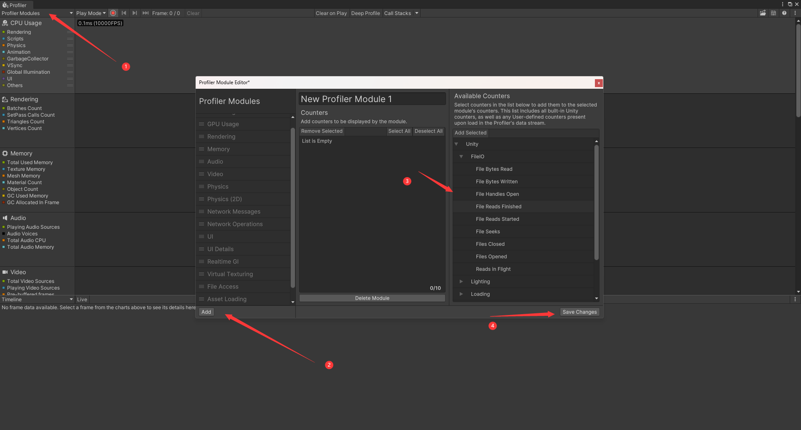
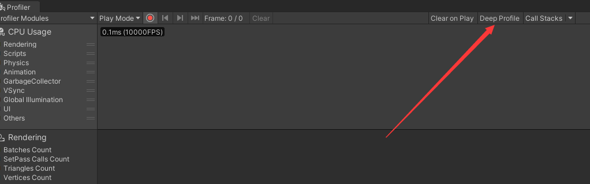

Profiler 窗口就是性能分析器的窗口，用来详细分析游戏性能。
打开 Profiler 窗口的方法：
- Window——Analysis——Profiler
- Ctrl+7
使用性能分析器进行分析时，其自身也是会消耗性能的。如果想获得更加准确的数据，可以使用独立性能分析器，即 Profiler (Standalone Process)。
打开 Profiler (Standalone Process) 窗口的方法：
- Window——Analysis——Profiler(Standalone Process)
独立性能分析器的运行不会影响收集的数据，因此可以获得更加准确的数据。它的用法和 Profiler 窗口相同，但是启动它的时间比打开 Profiler 窗口的时间长。
# 基本使用
打开 Profiler 窗口后，运行 Unity，再点击 Profiler 窗口上方的圆形按钮，就会开始收集当前开始的每一帧的性能，再点一下那个圆形按钮，则会停止收集，此时就可以双击右上部分的一个位置选中一帧，然后看这一帧的情况，一般我们可以选择波峰的一帧，这样容易看出性能开销大的原因。也可以推动时间轴，或者点击上方圆形按钮右侧的三个按钮，查看其它帧的情况。上方的 Frame 表示当前正在查看的帧数以及收集的总帧数，例如 Frame:738/963 表示一共收集了 963 帧，当前查看的是第 738 帧。
每一项左侧的颜色方块表示该项是显示的，如果点击颜色方块，则右侧会隐藏该项的数据。
如果不要显示某个模块的数据，可以点击左上角的 “Profiler Modules”，取消勾选它，这样在性能分析器收集数据的时候，也不会收集这些数据，可以减少性能分析器的开销。如果要重新显示某个模块的数据，则勾选它即可。点击 Restore Defaults 会恢复默认的设置。
如果要清除当前收集的所有帧的数据，则可以点击上方的 “Clear”。再次点击 Profiler 窗口上方的圆形按钮，就会开始收集当前开始的每一帧的性能，再点一下那个圆形按钮，则会停止收集，此时就可以双击右上部分的一个位置选中一帧，然后看这一帧的情况。
选中一帧后，除了可以在右侧看到这一帧的情况，还可以在下方看到这一帧更加具体的情况。
要找出造成性能开销的因素，可以尝试禁用场景中的游戏对象。如果禁用后，看到性能提升了，则说明问题出在这个游戏对象身上，优化的时候就可以从它身上下手。
- 点击圆形按钮左侧的下拉菜单，可以选择分析什么的性能。如果选择 Play Mode，则会分析游戏在运行时的性能，如果选择 Edit Mode，则会分析编辑器模式下游戏的性能。
- 如果用手机的数据线成功连接到电脑，在手机上运行 Unity 的游戏，Play Mode 这里会多出该手机设备供我们选择，我们就可以分析该手机设备上运行的 Unity 项目的性能。
- 也可以让手机和电脑都连接同一个 wifi，这样一来，这里也会多出该手机设备供我们选择，我们就可以分析该手机设备上运行的 Unity 项目的性能。
- 注意，无论是用 wifi 还是数据线，构建项目时必须在 Build Settings 窗口中勾选 Development Build 和 Autoconnect Profiler。
选择上方的 Clear on Play，则在每次重新运行游戏的时候，都会清空收集的数据，以便我们重新开始收集这一次的数据。
如果要保存收集到的数据到本地，方便之后查看，可以点击右上方的图标来保存。右上方也有一个图标可以读取之前保存的数据。
# 添加自定义模块
点击小齿轮，再点击 Add，可以自定义一个新的模块，并自定义这个模块要分析的性能，且可以在上方的输入框处改名，然后点击 Save Changes 可以保存。如果要删除它，则点击 Delete Module 即可删除它，同样，点击 Save Changes 可以保存。

# Deep Profile
选择上方的 Deep Profile，然后重新启动性能分析器，则性能分析器收集数据的时候，会把所有 C# 代码中的方法的信息也收集过来。例如我们自己写的 C# 脚本，里面的方法只要被调用了，就会被收集过来，方便我们从性能分析器查看它们的性能。在 Profiler 窗口选择 CPU Usage 模块，选中一帧，然后在下面选择 Hierarchy，右侧选择 Main Thread，再在右侧的搜索栏处搜索该方法的名字，就可以找到它，并查看它的性能。

当开启深度分析后，性能分析器就会捕捉每个函数所占用的资源，包括本身执行的时间和函数内部再调用其他函数消耗的时间等等
However，如果在一个大项目里开启深度分析，由于需要监测每个函数占用的资源，所以可能会造成性能分析器卡顿，甚至崩溃。Therefore，不建议在大型形目里开启 Deep Profile
更优的做法是使用 Profiler.BeginSample 和 Profiler.EndSample 方法括住需要性能分析的代码进行分析即可
void TestHaha()
{
Profiler.BeginSample("MyHaha");
// Your code
Profiler.EndSample();
}
# 调用栈（Call Stack）
调用栈（Call Stack）是计算机程序在执行过程中记录函数调用的一种数据结构。
调用栈是一个栈结构，即先进后出。它用于记录程序执行过程中，每个函数被调用的情况。
当一个函数被调用时，它的相关信息，如函数名、参数、返回地址等，会被添加进调用栈中。当该函数执行完成后，相应的信息会从调用栈中移除。通过不断添加和移除函数调用的信息，调用栈就记录了程序执行的顺序。
调用栈对于程序调试和分析非常有用。当程序出现错误或异常时，可以通过查看调用栈来确定错误发生的位置和函数调用的顺序。调试器通常会显示当前调用栈的信息，以帮助开发人员查看函数的执行过程并找出发生异常的原因。
选中 Deep Profile 右侧的 Call Stacks 按钮，这样在收集性能数据的时候，每一帧都会记录该方法的的调用栈信息。GC.Alloc、UnsafeUtility.Malloc、JobHandle.Complete 是 Unity 的方法，启用 Call Stacks 且勾选它们后，如果 Unity 有调用它们，则可以在 Hierarchy 或 Raw Hierarchy 右侧的搜索框中搜索到它们，这样就可以查看它们的性能了。
- GC.Alloc 表示 GC 的内存分配情况。
- UnsafeUtility.Malloc (Persistent) 用于在内存中分配指定大小的未初始化内存块。这个方法会直接在堆上分配内存，并可以绕过自动内存管理功能，需要手动管理内存的生命周期和释放。一般情况下，只有在处理非托管内存的特定场景下才会使用 UnsafeUtility.Malloc 方法。
- JobHandle.Complete 表示 Job 的完成情况。这里的 Job 是指 Unity 的 Job System 的一组特定的任务。
# C# 托管内存、非托管内存、托管堆
托管内存是由垃圾回收器自动管理的内存，当达到一定量时，会由垃圾回收器自动释放它们。
托管内存存放在托管堆中。托管堆是一种用于存储和管理托管对象的内存区域。每当创建一个新的托管对象时，托管堆就会分配内存空间给这个对象，并记录这个对象的信息。当托管对象不再被引用，垃圾回收器会自动将其标记为垃圾，并在适当的时候回收其占用的内存空间。
非托管内存不会自动被回收，它们需要我们程序员写代码去管理和释放它们。
非托管内存并不固定存储在一个地方，它们往往分散存储在不同的地方，例如操作系统的内存、临时缓冲区等。
# Unity DTOS
DOTS（Data-Oriented Technology Stack）是 Unity 引擎中的一个新的编程模型和工具集。它旨在提供更高性能、更可扩展和更并行化的游戏开发体验。
DOTS 中包含了三个主要部分：
1、ECS 框架：ECS 是一种用于组织和管理游戏对象的方式。它将游戏对象分解为实体（Entity）、组件（Component）和系统（System）。这种模式更加适合于并行处理和优化，可以提高游戏性能。
2、Job System（作业系统）：Job System 允许开发者将任务并行化，利用多核处理器的能力。它通过将任务划分为小的作业（jobs）并在多个线程上并发执行来提高性能。Job System 还可以与 ECS 结合使用，使得开发者可以更好地控制游戏的行为。
3、Burst Compiler（突发编译器）：Burst Compiler 是一种高性能的 C# 编译器，可以将 C# 代码转换为高效的本机代码，以进一步提高游戏的性能。
DOTS 的目标是为游戏开发者提供更好的性能和可扩展性，并更好地利用现代硬件的并行能力。它适用于需要处理大量实体和需要高性能的游戏项目。
# 其他
点击右上角的三点，有一些选项可以选择。
Color Blind Mode 表示色盲模式，开启后会调整 Profile 窗口的颜色，照顾色盲用户。
Show Stats for 'current frame' 开启后，当点击 Frame:XXX/XXX 左侧的按钮，从而选中最后一帧，则会显示最后一帧的统计信息。
Preferences，点击后会打开 Project Settings 窗口，用于设置性能分析器的一些属性。
- Frame Count，开始收集性能的数据时，每次最多可以查看多少帧。例如数值是 300，则表示最多可以查看 300 帧。
- Show Stats for 'current frame'，勾选后，则在右上角的三点会出现 Show Stats for 'current frame' 供我们选择。
- Default recording state，选择 Enable，则重启 Unity 再打开 Profiler 窗口，如果此时的模式是 Edit Mode，则会自动开始点击圆形按钮，开始收集数据。选择 Disabled，则重启 Unity 再打开 Profiler 窗口，需要手动点击圆形按钮，才会开始收集数据。选择 Remember，则会按照当前圆形按钮是启用还是禁用来决定下一次重启 Unity 再打开 Profiler 窗口时，该圆形按钮是否启用。
- Default editor target mode on start，选择 Play Mode，则重启 Unity 再打开 Profiler 窗口，左上方会选择 Play Mode，即在播放模式下才会收集数据。如果选择 Edit Mode，则重启 Unity 再打开 Profiler 窗口，左上方会选择 Edit Mode，即在编辑器模式下收集数据。
- Custom connection ID，当有多个 Unity 项目的实例同时运行，它们都要使用性能分析器来分析性能，则可以通过这个 Custom connection ID 来区分它们。
CPU Usage 模块：
- 下方窗口可以选择 Timeline、Hierarchy、Raw Hierarchy。
- 选择 Timeline，可以通过时间轴的方式查看这一帧中 CPU 依次干了什么。
- 选择 Hierarchy，可以查看 CPU 在这一帧中做的事情所消耗的性能和所花费的时间。Total 表示一共占用了 CPU 使用情况的百分之几。Self 表示自身的代码占用了 CPU 使用情况的百分之几，调用其它方法的代码不算在内的。Calls 表示被调用了几次。GC Alloc 表示 GC 分配的内存，当一个对象被释放后，它 GC 分配的内存不会马上被回收，所有 GC 分配的内存的总量达到一定程度，会触发 GC，此时垃圾回收器才会把这些内存回收，不过同时也会造成游戏卡一下。Time ms 表示一共耗时多少毫秒。Self ms 表示表示自身的代码耗时多少毫秒，调用其它方法的代码不算在内的。
- 选择 Raw Hierarchy 比起 Hierarchy 会单独列出更多信息，Hierarchy 实际上是把这些信息合并了。